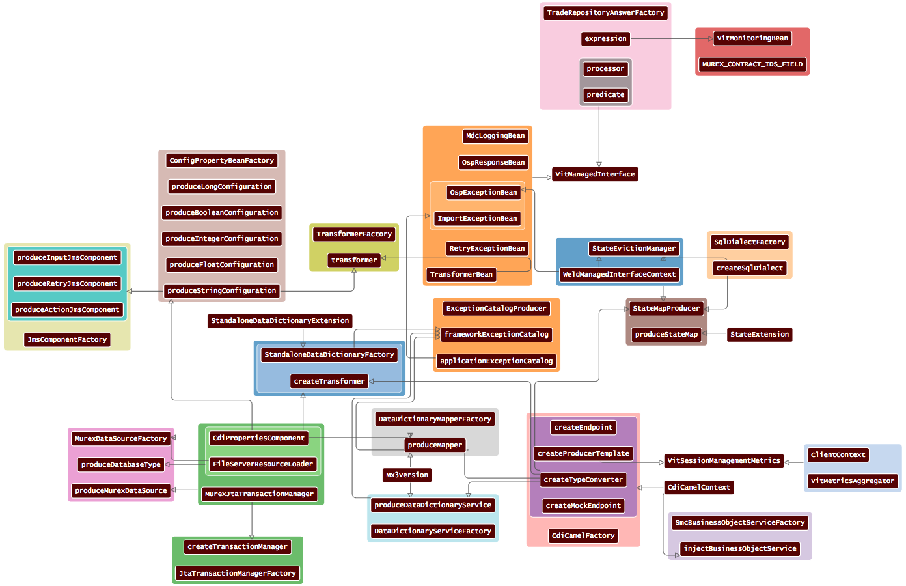

Visualization Framework for CDI
The following interactive visualization is automatically generated for the
Metrics CDI
library, you can click on it to see it in action:
Another visualization automatically generated for a more complex deployment, just wait until the layout has converged:
